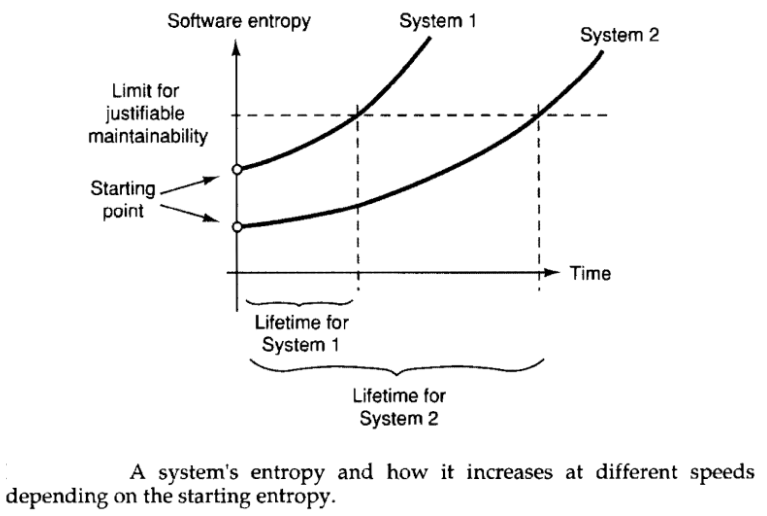

Hyland Clinician Window : Motivation for Good Design
Created by Damon German, last modified on Feb 08, 2022
- The second law of thermodynamics, in principle, states that a closed system's disorder cannot be reduced, it can only increase or possibly remain unchanged. A measure of this disorder is entropy. This law also seems plausible for software systems; a system's disorder, or entropy, always increases. We can call this software entropy. (Jacobson 69)
- To use a physics analogy, software systems model complex systems, which tend toward entropy (or disorder). Energy must be added to a physical system to preserve order. The same is true for software systems: architects must constantly expend energy to ensure good structural soundness, which won’t happen by accident. (Mark Richards and Neal Ford)
- A program that is used will be modified.
- When a program is modified, its complexity (entropy) will increase, provided that one does not actively work against this.
- Assume that a system initially has a certain software entropy. Experience shows that it is reasonable to assume that the increase in software entropy is proportional to the entropy of the software when the modification started. This means that it is easier to change an ordered system than a disordered one, something that all experience shows.
- When we design a system with the intention of it being maintainable, we try to give it the lowest software entropy possible from the beginning. This is one of the aims of system development. (Jacobson 69,70)
- 
- The Law of Change: (Max Kanat-Alexander)
- The longer your program exists, the more probable it is that any piece of it will have to change.
- Your software has to change, but changing it will introduce defects.
- The chance of introducing a defect into your program is proportional to the size of the changes you make to it.
- This is why we need good design.
- The best design is the one that allows for the most change in the environment with the least change in the software.
- It is important to design for evolution, to structure a program to evolve through changes in requirements and technology. (Coplien 189)
{kind=link}
{kind=link}